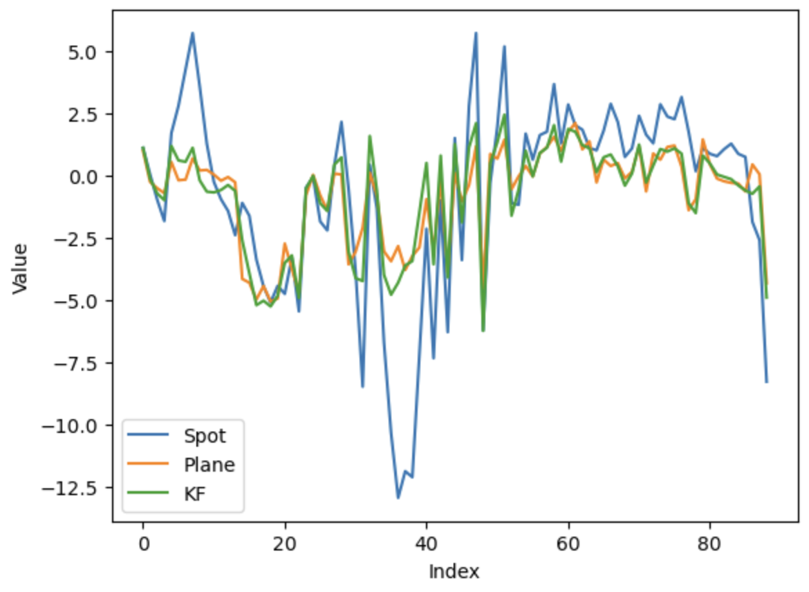

Closed-loop Mobile Manipulator Control Using a Distance Sensor
- William Sun
- Michael Gleicher University of Wisconsin - Madison
Abstract
We propose a closed-loop control system for a mobile manipulator using exteroception from a miniature optical time-of-flight sensor. As the arm follows a designated path, I utilize arm-mounted proximity sensors to ensure that the trajectory stays within the intended target range with minimal deviation throughout its sweep. We do so by combining direct distance measurements with proprioceptive data through a Kalman Filter to probabilistically estimate the true height of the robot hand. We are motivated to use SPADs for sensing because they are low-cost, lightweight, and low-power. For this robot application, we can easily mount multiple sensors around the Spot arm without compromising any performance to Spot operation (unlike a bulky LIDAR). We demonstrate the effectiveness of our method in a variety of scenarios, including a mobile manipulator reaching for a target object and a mobile manipulator avoiding obstacles in its path.
Video Demonstration
Data Capture
Methodology
TODOResults

Figure 1: TODO

Figure 2: TODO